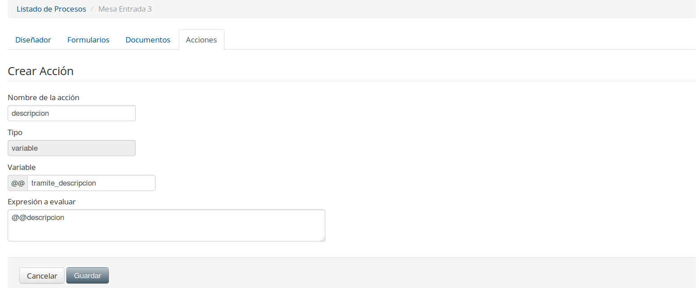
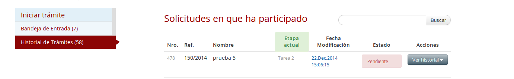

2.3.3 Acciones del proceso
Las acciones permiten realizar eventos especiales al iniciar o finalizar una tarea del modelo de procesos, en la actualidad existen nueve acciones predefinidas que se pueden utilizar al modelar el proceso, las cuales son:
- Enviar Correo
- Generar Variable
- Consultar Rest
- Consultar Soap
- Generar Callback
- Iniciar Trámite
- Continuar Trámite
- Notificaciones
- Descargar Documento
- Generar Documento
Para ingresar al menú de acciones simplemente haga clic sobre la pestaña Acciones. Como se indica en la imagen siguiente:
Figura 32: "Ventana de Gestión de Acciones"
Con lo anterior se abrirá el marco de trabajo para gestionar las acciones, permitiendo realizar las opciones típicas de un mantenedor, siendo las siguientes:
- Botón Nuevo :
- Permite añadir una acción al modelo de proceso que se encuentra trabajando. Al presionar sobre el botón se abrirá una ventana que le permitirá indicar que acción desea realizar, como se ve en la imagen siguiente:
Figura 33: "Nueva acción"
Acción Correo Electrónico
Por otro lado, si selecciona correo electrónico, se desplegará la siguiente ventana, en la cual simplemente debe completar los datos requeridos:
Figura 36: "Generación nueva acción para Correo Electrónico"
En donde:
- Campo Nombre: Corresponde al nombre de la acción a generar.
- Campo Tipo: es informativo, para que el usuario que tipo de acción está generando.
- Campo Para: indica el destinatario del correo electrónico, pude ser más de uno separado por coma “,” o indicar una variable por parámetro.
- Campo tema: corresponde al asunto del correo electrónico.
- Campo Contenido: es el contenido del correo electrónico.
- Campo Adjunto: Permite adjuntar documentos utilizando variables. Puede ser más de uno separados por coma ",".
- Botón Editar :
- Permite modificar las propiedades de la acción seleccionada, no es posible modificar el tipo de acción seleccionada.
- Botón Eliminar :
- Permite eliminar una acción definida. Recuerde que la acción de eliminar no es reversible, además siempre debe revisar que su modelo no esté utilizando la acción a eliminar antes de eliminarla.
Acción Generar Variable
Por otro lado, si selecciona generar variable se desplegará la siguiente ventana, en la cual simplemente debe completar los datos requeridos:

Figura 37: "Generación nueva acción para Crear Variable"
En donde:
- Campo Nombre de la acción: Corresponde al nombre de la acción a generar.
- Campo Tipo: es informativo, para que el usuario que tipo de acción está generando.
- Campo Variable: Corresponde al nombre de la variable
- Campo Expresión a Evaluar: Corresponde a la expresion regular a evaluar, como por ejemplo se pueden obtener la id del cliente, o realizar calculos entre distintos datos.
- Botón Editar :
- Permite modificar las propiedades de la acción seleccionada, no es posible modificar el tipo de acción seleccionada.
- Botón Eliminar :
- Permite eliminar una acción definida. Recuerde que la acción de eliminar no es reversible, además siempre debe revisar que su modelo no esté utilizando la acción a eliminar antes de eliminarla.
- Generación de Variables, para visualizar en Bandeja de Entrada, Participados y Seguimientos:
Para visualizar la Referencia y Descripción del Trámite en la Bandeja de Entrada, a su vez en Hístorico y Seguimiento se deben de seguir los siguientes pasos,
1) En la pestaña Formularios, crear dos campos, con referencia al Nro. de Mesa de Entrada y Descripción del Trámite.
2) Ir a la pestaña de Acción, y generar dos variables, con nombre tramite_ref y tramite_descripcion , la misma debe ser generada univocamente como se encuentra descripta.
3) Asociar los campos a las variables anteriores.
Ejemplo.
- Campo Etiqueta, Nro. Mesa de Entrada, y name txt_nro_mesa_entrada, asociar a la variable tramite_ref.
- Campo Etiqueda, Descrpcion, y name txt_desc_mesa_entrada, asociar a la variable tramite_descripcion.
5) Una vez realizado el mismo, ir a la pestaña Eventos y agregar las variables en modo "Despues" de ejecutar la tarea, para poder asignar los campos creados a las variables generadas.
A modo de dar continuidad con lo mencionado anteriormente, podemos visualizar un pequeño anexo a tener en cuenta:
Creación de dos campos.
Creación de dos variables (Nro. de Mesa de Entrada, y Descripción del Trámite).

Detalle de la variable (descripcion del tramite).

Detalle de la variable (numero de mesa de entrada).
Proceso
Edición de la Tarea 1
*Pestaña Pasos:
*Pestaña Eventos:
Finalmente Iniciar un Trámite
Visualización previa en la Bandeja de Entrada
Para confirmar, presionamos el botón "Finalizar"
Visualización en Histórico de Trámites

Visualización en Seguimiento
Acción Consultar WebService REST
Después de seleccionar Consultar Rest, se desplegará la siguiente imagen:
Figura 34: "Ventana para generación de Acción"
En donde:
- Campo Nombre de la acción: Corresponde al nombre de la acción a generar.
- Campo Variable respuesta: Nombre de la variable en la cual será almacenada la respuesta del servicio.
- Campo Endpoint: Corresponde a la dirección del host que provee el servicio.
- Campo Resource: Corresponde a la direccion del servicio propiemente tal. Considere que mediante esta url, se le podrá valores. Por ejemplo, si usted desea pasar la variable Rut como parámetro, en caso de elegir el método GET, debe escribir la URL de la siguiente forma: http://server/resource/11111111-1
- Campo Método: Metodos HTTP disponibles para elconsumo de servicios Rest (GET, POST, PUT, DELETE)
- Campo Timeout: Corresponde al tiempo en segundos que SIMPLE esperará respuesta del webservices, sino dará un error de timeout. En caso de no ser seteado, por defecto su valor sera 30 seg.
- Campo Número reintentos: En caso de existir un timeout, la accion tratará de consumir el servicio las veces que se indique en este campo, por defecto su valor es 3
- Campo Header: Corresponde a la definición de parámetros a pasar en la cabecera de la petición
- Campo Seguridad: Si el servicio requiere autenticación, esta será administrada en la sección de suguridad que se explicará más adelante. Este campo corresponde a la selección de la seguridad configurada.
Por ejemplo, para la siguinete URL: http://servidorweb/webservice/webservice.php?rut=@@rut
La parte http://servidorweb corresponde al Endpoint. Y la parte /webservice/webservice.php corresponde al Resource.
Tenga presente, que el WebService DEBE OBLIGATORIAMENTE responder con formato JSON y aceptar consultas vía REST.
Trabajando con el resultado
La variable de respuesta, podrá ser utilizada anteponiendo @@, por ejemplo:
Para el siguinete json de respuesta
{
"nombre":"Un nombre",
"persona":{
"edad":45
}
}
Se se definió por ejemplo respuesta_servicio como variable de respuesta, la forma de acceder al nombre será @@respuesta_servicio->nombre.
Y si se requiere llegar al dato de edad, la forma de acceder será @@respuesta_servicio->persona->edad.
Controlando los errores
Esta acción, es una función genérica de consulta a servicios rest, por lo cual la lógica de errores del servicio que se esté consumiendo, debe ser manejada con reglas de negocio según corresponda.
Para el caso de errores no controlados por el servicio, errores de conexión o timeout, estos serámn notificados en la variable de respuesta configurada con la sigueinte estructura:
{
"code" : 504, (Por ejemplo para el caso de timeout)
"desc" : "Timeout"
}
Para mayor información sobre el WebService que desea utilizar, acérquese al área de IT a consultar.
Para finalizar simplemente presione Guardar.
Acción Consultar WebService SOAP
De seleccionar Consultar SOAP, se desplegará la siguiente imagen:
Figura 35: "Ventana para generación de Acción"
En donde:
- Campo Nombre de la acción: Corresponde al nombre de la acción a generar.
- Campo Variable respuesta: Nombre de la variable en la cual será almacenada la respuesta del servicio.
- Campo WSDL: URL que especifica el WSDL del servicio SOAP. Opcionalmente existe la opción de cargar un archivo wsdl a través del botón "Importar".
- Campo Timeout: Corresponde al tiempo en segundos que SIMPLE esperará respuesta del webservices, sino dará un error de timeout
- Campo Número reintentos: En caso de existir un timeout, la accion tratará de consumir el servicio las veces que se indique en este campo, por defecto su valor es 3
- Campo Métodos: Una vez consultada la URL del web service o cargado el archivo wsdl, los métodos descubiertos son presentados en este listado.
- Campo Request: En este campo, una vez seleccionado el método a consumir, se debe completar los datos a enviar al servicio. Una forma gfácil de hacer esto, es probar el servicio con SOAPUI y copiar el request generado dentro de este campo.
- Campo Seguridad: Si el servicio requiere autenticación, esta será administrada en la sección de suguridad que se explicará más adelante. Este campo corresponde a la selección de la seguridad configurada.
Tenga presente, que la respuesta del WebService quedará almacenada en la variable de respuesta configurada, la cual contendrá un objeto json.
Trabajando con el resultado
La variable de respuesta, podrá ser utilizada anteponiendo @@, por ejemplo:
Para el siguinete json de respuesta
{
"nombre":"Un nombre",
"persona":{
"edad":45
}
}
Se se definió por ejemplo respuesta_servicio como variable de respuesta, la forma de acceder al nombre será @@respuesta_servicio->nombre.
Y si se requiere llegar al dato de edad, la forma de acceder será @@respuesta_servicio->persona->edad.
Controlando los errores
Esta acción, es una función genérica de consulta a servicios rest, por lo cual la lógica de errores del servicio que se esté consumiendo, debe ser manejada con reglas de negocio según corresponda.
Para el caso de errores no controlados por el servicio, errores de conexión o timeout, estos serámn notificados en la variable de respuesta configurada con la sigueinte estructura:
{
"code" : 504, (Por ejemplo para el caso de timeout)
"desc" : "Timeout"
}
Para mayor información sobre el WebService que desea utilizar, acérquese al área de IT a consultar.
Para finalizar simplemente presione Guardar.
Administración de Seguridad en WebServices
Para configurar la seguridad en el consumo de webservices REST y SOAP, es necesario seleccionar la pestaña de Seguridad, la cual se muestra en la siguiente figura:
Figura 36: "Configuración de seguridad"
Al presionar el botón nuevo, se desplegará el siguiente formulario
Figura 37: "Ventana para configuración de seguridad"
En donde:
- Campo Nombre de la Institución: Corresponde al nombre de la institución que provee el servicio.
- Campo Nombre del Servicio: Corresponde al nombre del servicio que solicita mecanismos de seguridad.
- Campo Tipo de Seguridad: Corresponde al tipo de seguridad (HTTP_BASIC, API_KEY, OAUTH2), dependiendo del tipode seguridad elegido se muestran los siguinetes campos:
- HTTP_BASIC
- Campo Usuario: Corresponde al nombre de usuario con el cual se autenticará el servicio
- Campo Contraseña: Corresponde a la contraseña del usuario para autenticar el servicio
- API_KEY
- Campo Llave de aplicación (Api key): Corresponde a la key con la cual se autenticará el servicio, se debe especificar junto con la key el tipo, por ejemplo "Bearer
" - Campo Nombre de aplicación (Name key): Corresponde al nombre de la propiedad del header, por ejemplo podría ser "X-API-Key"
- OAUTH2
- Campo Endpoint: Corresponde al nombre del server que provee el mecanismo de autenticación
- Campo Resource: Corresponde a la operación que provee el token una vez validadas las credenciales
- Campo Request: Corresponde a la petición, en donde irán las credenciales solicitadas por el servicio de autenticación
- Campo Client Id: Corresponde al identificador del cliente que requiere autenticarse
- Campo Client Secret: Corresponde al secreto que debe saber el cliente
- Campo Scope: Corresponde al alcance
- Campo Grant Type: Corresponde al nivel de permisos requerido
Para mayor información sobre el WebService que desea utilizar, acérquese al área de IT a consultar.
Para finalizar simplemente presione Guardar.
Callback
Al iniciar un trámite a través del API REST, existe la posibilidad de que el sistema externo envíe una URL de Callback para que el trámite, una vez llegado a cierto punto acordado por las partes, informe el resultado, esta accion se puede configurar en la siguiente pantalla:

Figura 38: "Configuración de Callback"
En donde:
- Campo Método: Corresponde al método mediante el cual espera ser accedida la URL enviada como Callback.
- Campo Header: Corresponde a la configuración de headers que eventalmente puede esperar el servicio de Callback expuesto por el sistema externo.
- Campo Seguridad: Si el servicio Callback enviado requiere autenticación, esta será administrada en la sección de suguridad que se explicará más adelante. Este campo corresponde a la selección de la seguridad configurada.
Para mayor información sobre el uso de Callback, acérquese al área de IT a consultar.
Para finalizar simplemente presione Guardar.
Acción Iniciar Trámite
Esta acción permite iniciar otro trámite de SIMPLE desde la ejecución de un trámite. Con esta funcionalidad es posible crear subprocesos dentro de Simple. Al seleccionar esta acción, se desplegará la siguiente imagen:
Figura 39: "Formulario de acción Iniciar Trámite"
En donde:
- Campo Nombre de la acción: Corresponde al nombre de la acción a generar.
- Campo Cuentas: Se listan las cuentas disponibles que han otorgado permisos a mi cuenta para poder iniciar procesos.
- Campo Trámites disponibles: Se listan los trámites disponibles para iniciar pertenecientes a la cuenta seleccionada previamente.
- Campo Tarea desde la cual desea continuar el proceso: Se listan las tareas existentes en mi proceso, en donde se debe seleccionar en cual tarea se desea que retorne la respuesta del proceso iniciado una vez que termine su ejecución.
- Campo Request: Mensaje en formato json necesario para iniciar el trámite seleccionado.
Se debe tener en cuenta que esta acción esta muy relacionada con la acción Continuar trámite, si se desea recibir respuesta del subproceso iniciado, en el subproceso será necesario configurar una acción de Continuar trámite. El comportamiento completo se puede visualizar en el siguiente diagrama de ejemplo:
Figura 40: "Ejemplo subproceso SIMPLE"
Para finalizar simplemente presione Guardar.
Por ejemplo, supongamos que tenémos un proceso de solicitud de certificado, que necesita la ejecución de otro proceso para obtener los datos laborales de una persona.
El proceso de solicitud es el siguiente:
Figura 40: "Proceso de solicitud de certificado"
Y el proceso que retorna los datos laborales de una persona es el siguiente:
Figura 41: "Proceso Entrega Datos Laborales"
Para integrar procesos dentro de simple, se realizan las sigientes acciones:
- 1. Primero se revisa lo que solicita de entrada el proceso que deseo iniciar desde otro trámite SIMPLE, esto se ve inspeccionando el primer formulario. Para este caso, el proceso de Entrega de datos laborales, pide los siguientes campos en su formulario de inicio:
- nombre
- apellido

Figura 42: "Revisión subproceso a iniciar"
Figura 43: "Pasos subproceso a iniciar"
Figura 44: "Campos formulario inicio subproceso"
- 2. Conociendo la entrada, se configura la acción Iniciar Trámite, en donde se entrega en formato Json lo solicitado por el proceso Entrega de datos laborales.
- 3. Se indica en cual de mis tareas quiero que retorne la información que necesita mi proceso, en este caso es la tarea Datos Laborales.
Figura 45: "Ejemplo configuracion acción Iniciar Trámite"
- 4. Luego se indica cuando quiero que se ejecute la acción.
Figura 46: "Ejemplo configuracion evento Iniciar Trámite"
- 5. En el proceso Entrega de datos laborales, se configura la accion para continuar trámite, el cual continuará el proceso de Solicitud, según la configuracion de la acción Iniciar Trámite. Para este caso, como se indicó, se revisa la información que solicita la taréa Datos Laborales en su primer formulario, la cual es:
- profesion
- empresa
Figura 47: "Revisión tarea donde se continuará el proceso"
Figura 48: "Formulario inicio de tarea para continuar el proceso"
Figura 49: "Campos requeridos para continuar el proceso"
- 6. Se configura la acción continuar trámite con la información necesaria.
Figura 50: "Ejemplo configuración acción Continuar Trámite"
- 6. Al continuar se visualiza el traspaso de información y como los procesos son ejecutados a través de los eventos configurados.
Al ejecutar el proceso se refleja el siguinete comportamiento, primero iniciamos el proceso Solicitud de Certificado
Figura 51: "Ejemplo Iniciar y Continuar Trámite Simple"
Se ingresa la información solicitada al iniciar el proceso de Sollicitud de Certificado
Figura 52: "Ejemplo Iniciar y Continuar Trámite Simple"
Al finalizar el paso anterior, se ejecuta la acción de iniciar trámite, esto se visualiza en el menú izquierdo, en donde se refleja que hay 2 procesos en la bandeja de entrada
Figura 53: "Ejemplo Iniciar y Continuar Trámite Simple"
Luego, en la bandeja de entrada se puede visualizar el proceso principal, el cual queda esperando en la etapa Datos Laborales, y el subproceso iniciado recientemente, el cual se encuentra en la etapa Obtener profesión y empresa
Figura 54: "Ejemplo Iniciar y Continuar Trámite Simple"
Al ingresar al subproceso nos muestra la información que fue entregada por el proceso principal, al iniciar el subproceso.
Figura 55: "Ejemplo Iniciar y Continuar Trámite Simple"
Se avanza en el subproceso, y se completa la información solicitada, la cual posteriormente será enviada al proceso principal.
Figura 56: "Ejemplo Iniciar y Continuar Trámite Simple"
Se finaliza el subproceso.
Figura 57: "Ejemplo Iniciar y Continuar Trámite Simple"
El proceso principal es avanzado por el subproceso a la siguiente etapa, y se visualiza los datos entregados por el subproceso.
Figura 58: "Ejemplo Iniciar y Continuar Trámite Simple"
Acción Continuar Trámite
Esta acción, se debe configurar cuando sabemos que nuestro proceso esta habilitado para ser iniciado por otro trámite de SIMPLE, ya que depende de la acción Iniciar Trámite para poder ejecutarse de forma correcta. Al seleccionar esta acción, se desplegará la siguiente imagen:
Figura 41: "Formulario de acción Continuar Trámite"
En donde:
- Campo Nombre de la acción: Corresponde al nombre de la acción a generar.
- CampoRequest: Mensaje en formato json con la respuesta que será entregada al proceso padre.
Se debe tener en cuenta que los campos retornados en el request, deben existir en el formulario de entrada de la tarea que se está continuando.
Para finalizar simplemente presione Guardar.
Acción Notificaciones
Esta acción permite seleccionar desde el listado de suscriptores externos, a quien se quiere notificar. El contenido de la notificacion será la salida configurada para la tarea que se está editando. Al seleccionar esta acción, se desplegará la siguiente imagen:
Figura 42: "Formulario de Notificaciones"
En donde:
- Campo Nombre de la acción: Corresponde al nombre de la acción a generar.
- CampoSuscriptores: Listado de suscriptores disponibles para notificar, los cuales fueron configurados debidamente en la pestaña "Suscriptores Externos".
Para finalizar simplemente presione Guardar.
Acción Generar Documento
Esta acción permite generar un documento y poder utilizar la variable para otras acciones que desee en el proceso.
En donde:
- Campo Nombre de la acción: Corresponde al nombre de la acción a generar.
- CampoVariable: Variable que almacenará el nombre del archivo generado, el que se puede utilizar por ejemplo para adjuntar un archivo en un correo u obtener el base64 del documento por medio de la variable.
Para finalizar simplemente presione Guardar.